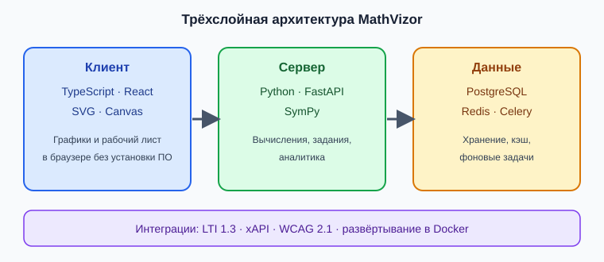

Клиент
TypeScript, React, SVG и Canvas — динамическая визуализация в браузере.
Веб-приложение с трёхслойной архитектурой, работающее в браузере без установки дополнительного ПО.

TypeScript, React, SVG и Canvas — динамическая визуализация в браузере.
Python, FastAPI, SymPy — символьные вычисления, генерация заданий, аналитика.
PostgreSQL; кэширование и фоновые задачи — Redis и Celery.
LTI 1.3, xAPI, WCAG 2.1; развёртывание в контейнерах Docker.